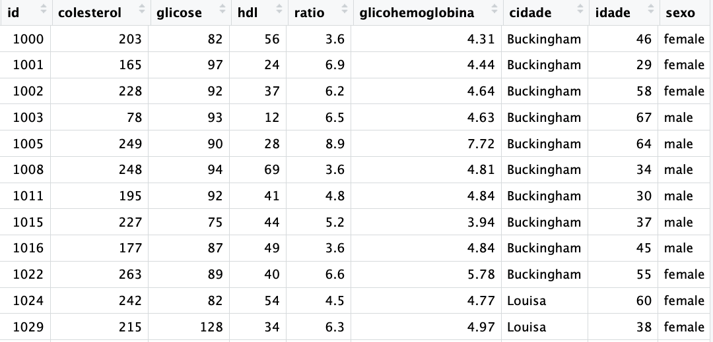

7 Data Frames e Tibbles
Data frames e Tibbles são os objetos do R para armazenar dados. Se os vetores são a base o R, os data frames e as tibbles são o coração do R.
7.1 Data frames
Data frames são a forma usual do R para armazenar dados. Veremos depois que as tibbles são a versão mais nova dos data frames, com melhorias em vários aspectos.
Superficialmente os data frames e as tibbles são como planilhas do Excel, com colunas e linhas, onde cada coluna é uma variável da pesquisa (ex: sexo, idade, peso) e cada linha uma observação (ex: um paciente ou um caso).
O R possui vários datasets (conjuntos de dados) para facilitar o aprendizado. Para saber mais sobre os datasets inclusos no R digite no console o comando abaixo: > data()
Podemos carregar os datasets já inclusos no R com a função mesma função data(), bastando incluir como argumento o nome do dataset desejado. No exemplo a seguir iremos carregar o dataset USArrests. Este dataset contém estatísticas das prisões por 100.000 habitantes por assalto, assassinato e estupro em cada um dos 50 estados dos EUA em 1973, como também a porcentagem da população urbana.
data(USArrests)Como esse dataset carregado podemos agora visualizar os dados simplesmente digitando o nome do dataset no console.
head(USArrests) Murder Assault UrbanPop Rape
Alabama 13.2 236 58 21.2
Alaska 10.0 263 48 44.5
Arizona 8.1 294 80 31.0
Arkansas 8.8 190 50 19.5
California 9.0 276 91 40.6
Colorado 7.9 204 78 38.7Experimente também usar a função str(), que mostra a estrutura dos dados de um objeto.
Você verá que o dataset USArrests é um data frame com 50 observações (50 linhas) e 4 variáveis (Murder, Assault, UrbanPop, Rape), como mostrado abaixo.
str(USArrests)'data.frame': 50 obs. of 4 variables:
$ Murder : num 13.2 10 8.1 8.8 9 7.9 3.3 5.9 15.4 17.4 ...
$ Assault : int 236 263 294 190 276 204 110 238 335 211 ...
$ UrbanPop: int 58 48 80 50 91 78 77 72 80 60 ...
$ Rape : num 21.2 44.5 31 19.5 40.6 38.7 11.1 15.8 31.9 25.8 ...Vejamos a estrutura de um dataset com 403 pacientes e 19 variáveis num estudo sobre diabetes, obesidade e outros fatores de risco para doenças coronarianas. O data frame contém então 403 linhasa e 19 colunas. Esse dataset foi obtido no site da universidade de Vanderbilt no link a seguir:
https://hbiostat.org/data/repo/diabetes.csv
Para usar esse dataset é necessário fazer o download desse arquivo e depois carregar esse arquivo no R. Veremos mais tarde como fazer isso.
n id colesterol glicose hdl ratio glicohemoglobina cidade idade sexo
1 1 1000 203 82 56 3.6 4.31 Buckingham 46 female
2 2 1001 165 97 24 6.9 4.44 Buckingham 29 female
3 3 1002 228 92 37 6.2 4.64 Buckingham 58 female
4 4 1003 78 93 12 6.5 4.63 Buckingham 67 male
5 5 1005 249 90 28 8.9 7.72 Buckingham 64 male
6 6 1008 248 94 69 3.6 4.81 Buckingham 34 male
altura peso biotipo sistolica diastolica cintura quadril time.ppn
1 157.48 54.88463 medium 118 59 29 38 720
2 162.56 98.88306 large 112 68 46 48 360
3 154.94 116.11955 large 190 92 49 57 180
4 170.18 53.97745 large 110 50 33 38 480
5 172.72 83.00734 medium 138 80 44 41 300
6 180.34 86.18248 large 132 86 36 42 195str(diabetes)'data.frame': 403 obs. of 18 variables:
$ n : int 1 2 3 4 5 6 7 8 9 10 ...
$ id : int 1000 1001 1002 1003 1005 1008 1011 1015 1016 1022 ...
$ colesterol : int 203 165 228 78 249 248 195 227 177 263 ...
$ glicose : int 82 97 92 93 90 94 92 75 87 89 ...
$ hdl : int 56 24 37 12 28 69 41 44 49 40 ...
$ ratio : num 3.6 6.9 6.2 6.5 8.9 ...
$ glicohemoglobina: num 4.31 4.44 4.64 4.63 7.72 ...
$ cidade : chr "Buckingham" "Buckingham" "Buckingham" "Buckingham" ...
$ idade : int 46 29 58 67 64 34 30 37 45 55 ...
$ sexo : chr "female" "female" "female" "male" ...
$ altura : num 157 163 155 170 173 ...
$ peso : num 54.9 98.9 116.1 54 83 ...
$ biotipo : chr "medium" "large" "large" "large" ...
$ sistolica : int 118 112 190 110 138 132 161 NA 160 108 ...
$ diastolica : int 59 68 92 50 80 86 112 NA 80 72 ...
$ cintura : int 29 46 49 33 44 36 46 34 34 45 ...
$ quadril : int 38 48 57 38 41 42 49 39 40 50 ...
$ time.ppn : int 720 360 180 480 300 195 720 1020 300 240 ...Podemos criar um data frame com a função data.frame(), como a seguir:
nome <- c("Henrique", "Antônio", "Fabiano")
idade <- c(45, 40, 48)
staff <- data.frame(nome, idade)
staff nome idade
1 Henrique 45
2 Antônio 40
3 Fabiano 48A última linha acima criou o data frame, com as as duas colunas (nome e idade) e as 3 linhas, uma para cada participante da pesquisa e armazenou esse data frame no objeto staff. Veja que o objeto staff é um data.frame do R.
class(staff)[1] "data.frame"Podemos visualizarmos a estrutura desse data frame com a função str(staff).
str(staff)'data.frame': 3 obs. of 2 variables:
$ nome : chr "Henrique" "Antônio" "Fabiano"
$ idade: num 45 40 48Para visualizarmos o data frame basta digitar seu nome staff.
staff nome idade
1 Henrique 45
2 Antônio 40
3 Fabiano 487.2 tidy: wide x long
A palavra data frame pode ser traduzida grosseiramente por quadro de dados e se refere a dados dispostos numa estrutura com linhas e colunas. Ou seja, um data frame é um objeto com estrutura bidimensional, composto de linhas e colunas, tais como uma matriz de dados.
A forma de organização mais comum de dados num data frame é chamada de tidy (Wickham 2014) que significa, segundo o dicionário Cambridge, “having everything ordered and arranged in the right place”.
Um dataset ou um data frame organizado (tidy data) as informações estão dispostas da seguinte forma:
- Cada variável é uma coluna (ou cada coluna é uma variável).
- Cada observação é uma linha (ou cada linha é uma observação).
- Cada célula é um valor de uma variável em uma determinada observação.

Existem duas formas de organizar os dados numa tabela: wide e long. Vamos ver cada uma dessas formas a seguir.
Vamos primeiro criar um pequeno data frame para exemplo, no qual 3 pacientes se submeteram a dois tipos de tratamento, obtendo um determinado resultado para cada tratamento.
# criando os vetores do data frame simulado
pacientes <- c("João", "José", "Maria")
tratamentoA <- c(25,16,20)
tratamentoB <- c(12,8,9)
# criando o data frame a partir dos vetores já criados
result <- data.frame(pacientes, tratamentoA, tratamentoB)
# mostrando o data frame criado
result pacientes tratamentoA tratamentoB
1 João 25 12
2 José 16 8
3 Maria 20 9Esse data frame é um exemplo de dados no formado wide (largo). E é muitas vezes a forma usual de um conjunto de dados.
Entretanto, frequentemente, precisamos colocar esses dados numa outra disposição que facilita a análise dos dados. O formato long (comprido) é essa outra forma.
Podemos ajustar esse data frame no formato long, colocando o tipo de tratamento numa coluna e o resultado noutra coluna. Ou seja, as duas colunas anteriores chamadas tratamentoA e tratamentoB serão juntadas em uma única coluna, chamada tratamento e os resultados passarão a ser uma única coluna.
Veja no exemplo abaixo a transformação desse conjunto de dados para o formato long:
library(tidyr)
result |>
pivot_longer(!pacientes,
names_to = "tratamento",
values_to = "resultado")# A tibble: 6 × 3
pacientes tratamento resultado
<chr> <chr> <dbl>
1 João tratamentoA 25
2 João tratamentoB 12
3 José tratamentoA 16
4 José tratamentoB 8
5 Maria tratamentoA 20
6 Maria tratamentoB 9Não se preocupe com o código usado aqui para fazer essa transformação. O objetivo aqui é entender que existem dois tipos de formatação do data frame, wide e long e que existem ferramentas para essa transformação num sentido e no outro.
Sugiro a leitura do artigo Tidy Data de Hadley Wickham, publicado no Journal of Statistical Software, Vol VV, Issue 2, no link a seguir: https://vita.had.co.nz/papers/tidy-data.pdf
7.3 Tibbles, os dataframes do tidyverse
Tibbles são data frames mais amigáveis. As tiblles foram criadas para resolver alguns problemas dos data frames e fazem parte do pacote tibble do tidyverse. Veremos nos capítulos adiante o que são pacotes, o que é o tidyverse.
Tibbles são a versão moderna dos data frames do R. Um dataframe é uma estrutura de dados em R que organiza dados em uma tabela, onde cada coluna pode conter um tipo diferente de dados (como números, texto, ou datas). Cada linha do dataframe representa uma observação.
Por exemplo, imagine que você tem uma tabela com informações sobre pacientes:
| Nome | Idade | Tipo Sanguíneo |
|---|---|---|
| João | 30 | A+ |
| Maria | 25 | B- |
| Ana | 40 | O+ |
Essa tabela pode ser representada como um dataframe em R.
7.3.1 O que são Tibbles?
Tibbles são uma versão moderna dos dataframes, oferecida pelo pacote tibble, parte do tidyverse. Eles são projetados para serem mais simples e robustos do que os dataframes tradicionais. Embora sejam semelhantes aos dataframes, as tibbles trazem várias vantagens que facilitam o trabalho com dados em R.
7.3.2 Vantagens das Tibbles
Exibição Melhorada:
- Quando você exibe uma tibble, ela é formatada de forma amigável. Apenas as primeiras 10 linhas e as colunas que cabem na tela são mostradas, evitando sobrecarregar a tela com informações.
- Dataframes tradicionais podem mostrar grandes quantidades de dados de uma só vez, o que pode ser confuso.
# Exibindo um dataframe tradicional
df <- data.frame(nome = c("João", "Maria", "Ana", "Marcos", "Antônio",
"Pedro", "José", "Gustavo", "Carlos", "Rafaela",
"Luiza", "Lucas", "Laura", "Lavinia", "Carla"),
idade = c(30, 25, 40, 35, 60,
75, 27, 54, 59, 12,
19, 22, 65, 87, 90),
tipoSanguineo = c("A+", "B-", "O+", "A+", "B-",
"O+", "A+", "B-", "O+","B-",
"O+", "A+", "A+", "B-", "O+"))
df nome idade tipoSanguineo
1 João 30 A+
2 Maria 25 B-
3 Ana 40 O+
4 Marcos 35 A+
5 Antônio 60 B-
6 Pedro 75 O+
7 José 27 A+
8 Gustavo 54 B-
9 Carlos 59 O+
10 Rafaela 12 B-
11 Luiza 19 O+
12 Lucas 22 A+
13 Laura 65 A+
14 Lavinia 87 B-
15 Carla 90 O+# Exibindo uma tibble
library(tibble)
tib <- tibble(nome = c("João", "Maria", "Ana", "Marcos", "Antônio",
"Pedro", "José", "Gustavo", "Carlos", "Rafaela",
"Luiza", "Lucas", "Laura", "Lavinia", "Carla"),
idade = c(30, 25, 40, 35, 60,
75, 27, 54, 59, 12,
19, 22, 65, 87, 90),
tipoSanguineo = c("A+", "B-", "O+", "A+", "B-",
"O+", "A+", "B-", "O+","B-",
"O+", "A+", "A+", "B-", "O+"))
print(tib)# A tibble: 15 × 3
nome idade tipoSanguineo
<chr> <dbl> <chr>
1 João 30 A+
2 Maria 25 B-
3 Ana 40 O+
4 Marcos 35 A+
5 Antônio 60 B-
6 Pedro 75 O+
7 José 27 A+
8 Gustavo 54 B-
9 Carlos 59 O+
10 Rafaela 12 B-
11 Luiza 19 O+
12 Lucas 22 A+
13 Laura 65 A+
14 Lavinia 87 B-
15 Carla 90 O+ Colunas Consistentes:
- As tibbles sempre mantêm as colunas como os tipos de dados corretos. Por exemplo, se você tiver uma coluna de números, ela não será automaticamente convertida em caracteres, mesmo se houver um valor de texto nela.
- Dataframes tradicionais às vezes convertem automaticamente os tipos de dados de colunas, o que pode causar problemas.
Facilidade de Subsetting (Subconjuntos):
- Subsetting em tibbles é mais intuitivo. Você pode usar colchetes
[],$ou funções específicas dotidyversesem surpresas. - Dataframes tradicionais podem se comportar de maneiras inesperadas ao fazer subsetting, especialmente com colunas de uma única linha.
- Subsetting em tibbles é mais intuitivo. Você pode usar colchetes
# Subsetting com tibble
tib$nome # Acesso à coluna 'Nome' [1] "João" "Maria" "Ana" "Marcos" "Antônio" "Pedro" "José"
[8] "Gustavo" "Carlos" "Rafaela" "Luiza" "Lucas" "Laura" "Lavinia"
[15] "Carla" # Subsetting com tibble
tib[1, ] # Acesso à primeira linha# A tibble: 1 × 3
nome idade tipoSanguineo
<chr> <dbl> <chr>
1 João 30 A+ # Subsetting com dataframe tradicional pode causar problemas se não tomar cuidado
df$nome # Acesso à coluna 'Nome' [1] "João" "Maria" "Ana" "Marcos" "Antônio" "Pedro" "José"
[8] "Gustavo" "Carlos" "Rafaela" "Luiza" "Lucas" "Laura" "Lavinia"
[15] "Carla" # Subsetting com dataframe tradicional pode causar problemas se não tomar cuidado
df[1, ] # Acesso à primeira linha nome idade tipoSanguineo
1 João 30 A+Mensagens de Erro Mais Úteis:
- As tibbles fornecem mensagens de erro mais claras e informativas, ajudando a entender o que deu errado e como corrigir.
Melhor Compatibilidade com o Tidyverse:
- As tibbles são projetadas para funcionar perfeitamente com outras ferramentas do
tidyverse(comodplyreggplot2), facilitando operações de manipulação de dados e visualização.
- As tibbles são projetadas para funcionar perfeitamente com outras ferramentas do
7.3.3 Criando e Usando Tibbles
Aqui está um exemplo de como criar e usar tibbles no R:
# Instale e carregue o pacote tibble
# install.packages("tibble")
library(tibble)
# Criando uma tibble
dados_pacientes <- tibble(nome = c("João", "Maria", "Ana", "Marcos", "Antônio",
"Pedro", "José", "Gustavo", "Carlos", "Rafaela",
"Luiza", "Lucas", "Laura", "Lavinia", "Carla"),
idade = c(30, 25, 40, 35, 60,
75, 27, 54, 59, 12,
19, 22, 65, 87, 90),
tipoSanguineo = c("A+", "B-", "O+", "A+", "B-",
"O+", "A+", "B-", "O+","B-",
"O+", "A+", "A+", "B-", "O+"))# Exibindo a tibble
dados_pacientes# A tibble: 15 × 3
nome idade tipoSanguineo
<chr> <dbl> <chr>
1 João 30 A+
2 Maria 25 B-
3 Ana 40 O+
4 Marcos 35 A+
5 Antônio 60 B-
6 Pedro 75 O+
7 José 27 A+
8 Gustavo 54 B-
9 Carlos 59 O+
10 Rafaela 12 B-
11 Luiza 19 O+
12 Lucas 22 A+
13 Laura 65 A+
14 Lavinia 87 B-
15 Carla 90 O+ # Acessando colunas
dados_pacientes$nome [1] "João" "Maria" "Ana" "Marcos" "Antônio" "Pedro" "José"
[8] "Gustavo" "Carlos" "Rafaela" "Luiza" "Lucas" "Laura" "Lavinia"
[15] "Carla" # Filtrando dados com o dplyr (do tidyverse)
library(dplyr)
pacientes_mais_jovens <- dados_pacientes %>% filter(idade < 35)
pacientes_mais_jovens# A tibble: 6 × 3
nome idade tipoSanguineo
<chr> <dbl> <chr>
1 João 30 A+
2 Maria 25 B-
3 José 27 A+
4 Rafaela 12 B-
5 Luiza 19 O+
6 Lucas 22 A+ 7.3.4 transformando data frames em tibbles
Caso você tenha um data frame, é fácil transformá-lo numa tibble usando a função as.tibble().
O código a seguir lê um banco de dados chamado diabetes.csv que está na pasta dataset do projeto. A leitura será feita através da função base do R read.csv(), que coloca os dados lidos num data frame. Em seguida, usaremos a função as.tibble() para transformar o data frame numa tibble.
# lendo os dados com a função read.csv do R Base
diabetes <- read.csv("dataset/diabetes.csv")
# verificando que os dados foram armazenados num data frame
str(diabetes)'data.frame': 403 obs. of 18 variables:
$ n : int 1 2 3 4 5 6 7 8 9 10 ...
$ id : int 1000 1001 1002 1003 1005 1008 1011 1015 1016 1022 ...
$ colesterol : int 203 165 228 78 249 248 195 227 177 263 ...
$ glicose : int 82 97 92 93 90 94 92 75 87 89 ...
$ hdl : int 56 24 37 12 28 69 41 44 49 40 ...
$ ratio : num 3.6 6.9 6.2 6.5 8.9 ...
$ glicohemoglobina: num 4.31 4.44 4.64 4.63 7.72 ...
$ cidade : chr "Buckingham" "Buckingham" "Buckingham" "Buckingham" ...
$ idade : int 46 29 58 67 64 34 30 37 45 55 ...
$ sexo : chr "female" "female" "female" "male" ...
$ altura : num 157 163 155 170 173 ...
$ peso : num 54.9 98.9 116.1 54 83 ...
$ biotipo : chr "medium" "large" "large" "large" ...
$ sistolica : int 118 112 190 110 138 132 161 NA 160 108 ...
$ diastolica : int 59 68 92 50 80 86 112 NA 80 72 ...
$ cintura : int 29 46 49 33 44 36 46 34 34 45 ...
$ quadril : int 38 48 57 38 41 42 49 39 40 50 ...
$ time.ppn : int 720 360 180 480 300 195 720 1020 300 240 ...# transformando o data frame numa tibble
diabetes <- as_tibble(diabetes)
# verificando que os dados agora esão armazenados numa tibble
str(diabetes)tibble [403 × 18] (S3: tbl_df/tbl/data.frame)
$ n : int [1:403] 1 2 3 4 5 6 7 8 9 10 ...
$ id : int [1:403] 1000 1001 1002 1003 1005 1008 1011 1015 1016 1022 ...
$ colesterol : int [1:403] 203 165 228 78 249 248 195 227 177 263 ...
$ glicose : int [1:403] 82 97 92 93 90 94 92 75 87 89 ...
$ hdl : int [1:403] 56 24 37 12 28 69 41 44 49 40 ...
$ ratio : num [1:403] 3.6 6.9 6.2 6.5 8.9 ...
$ glicohemoglobina: num [1:403] 4.31 4.44 4.64 4.63 7.72 ...
$ cidade : chr [1:403] "Buckingham" "Buckingham" "Buckingham" "Buckingham" ...
$ idade : int [1:403] 46 29 58 67 64 34 30 37 45 55 ...
$ sexo : chr [1:403] "female" "female" "female" "male" ...
$ altura : num [1:403] 157 163 155 170 173 ...
$ peso : num [1:403] 54.9 98.9 116.1 54 83 ...
$ biotipo : chr [1:403] "medium" "large" "large" "large" ...
$ sistolica : int [1:403] 118 112 190 110 138 132 161 NA 160 108 ...
$ diastolica : int [1:403] 59 68 92 50 80 86 112 NA 80 72 ...
$ cintura : int [1:403] 29 46 49 33 44 36 46 34 34 45 ...
$ quadril : int [1:403] 38 48 57 38 41 42 49 39 40 50 ...
$ time.ppn : int [1:403] 720 360 180 480 300 195 720 1020 300 240 ...Veremos mais adiante que a função read_csv() do readr já lê os dados como uma tibble.
# lendo os dados com a função read.csv do R Base
library(readr)
diabetes <- read_csv("dataset/diabetes.csv") Rows: 403 Columns: 18
── Column specification ────────────────────────────────────────────────────────
Delimiter: ","
chr (3): cidade, sexo, biotipo
dbl (15): n, id, colesterol, glicose, hdl, ratio, glicohemoglobina, idade, a...
ℹ Use `spec()` to retrieve the full column specification for this data.
ℹ Specify the column types or set `show_col_types = FALSE` to quiet this message.# verificando que os dados foram armazenados num data frame
str(diabetes)spc_tbl_ [403 × 18] (S3: spec_tbl_df/tbl_df/tbl/data.frame)
$ n : num [1:403] 1 2 3 4 5 6 7 8 9 10 ...
$ id : num [1:403] 1000 1001 1002 1003 1005 ...
$ colesterol : num [1:403] 203 165 228 78 249 248 195 227 177 263 ...
$ glicose : num [1:403] 82 97 92 93 90 94 92 75 87 89 ...
$ hdl : num [1:403] 56 24 37 12 28 69 41 44 49 40 ...
$ ratio : num [1:403] 3.6 6.9 6.2 6.5 8.9 ...
$ glicohemoglobina: num [1:403] 4.31 4.44 4.64 4.63 7.72 ...
$ cidade : chr [1:403] "Buckingham" "Buckingham" "Buckingham" "Buckingham" ...
$ idade : num [1:403] 46 29 58 67 64 34 30 37 45 55 ...
$ sexo : chr [1:403] "female" "female" "female" "male" ...
$ altura : num [1:403] 157 163 155 170 173 ...
$ peso : num [1:403] 54.9 98.9 116.1 54 83 ...
$ biotipo : chr [1:403] "medium" "large" "large" "large" ...
$ sistolica : num [1:403] 118 112 190 110 138 132 161 NA 160 108 ...
$ diastolica : num [1:403] 59 68 92 50 80 86 112 NA 80 72 ...
$ cintura : num [1:403] 29 46 49 33 44 36 46 34 34 45 ...
$ quadril : num [1:403] 38 48 57 38 41 42 49 39 40 50 ...
$ time.ppn : num [1:403] 720 360 180 480 300 195 720 1020 300 240 ...
- attr(*, "spec")=
.. cols(
.. n = col_double(),
.. id = col_double(),
.. colesterol = col_double(),
.. glicose = col_double(),
.. hdl = col_double(),
.. ratio = col_double(),
.. glicohemoglobina = col_double(),
.. cidade = col_character(),
.. idade = col_double(),
.. sexo = col_character(),
.. altura = col_double(),
.. peso = col_double(),
.. biotipo = col_character(),
.. sistolica = col_double(),
.. diastolica = col_double(),
.. cintura = col_double(),
.. quadril = col_double(),
.. time.ppn = col_double()
.. )
- attr(*, "problems")=<externalptr>